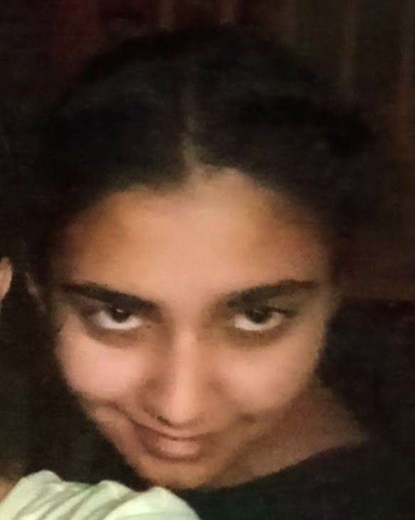

It looks like someone left something behind.
It has been waiting
quite patiently.
If you have exams...
Close this tab.
GO STUDY.
Come back when you're done.
...
Still here?
Alright then.
Let's begin.
Thank you.
For being my friend.
For all the random conversations, bakchodi, drawings, dances, calls, gifts,
and all the tiny things I probably didn't realize I'd remember this much.
I don't know where this whole thing goes from here, and honestly, I don't think I need to know right now.
I just wanted you to know that I'm genuinely glad I got to have this friendship.
So yeah...
Thanks, bro. 🫡
Created by: Jasleen ft. ChatGPT (I learnt to code from it and built this.)
Written by: Jasleen
Design and Development: Jasleen ft. ChatGPT
Special thanks to: China yee and "dear ex best friend" by tate mcrae for being a strong inspiration.
P.S. I already wished you happy birthday (Pritha, 8th class wali... If you remember)... You just didn't know it was me. 🫥 So... here's your actual birthday gift. A little late. 🤧
so... One random day, Sharvi dragged me over to meet some people from the other section. I already knew Reva but had met you and Khanak for the first time... When I first met you, You just felt like someone I probably wouldn't ever actually get close to.
In 8th...
We naturally became friends... I was basically a lost introvert without
an owner, looking for one and you adopted me. You were the extrovert
friend to my introvert ass...
It was totally random...
I liked playing, dancing, talking, singing, etc. with you... I used to
feel great knowing I was the only person who had ever heard you sing in your
awaj without being nervous....
"YoU kNoW yOu LoVe Me I kNoW yOu CaRe ....
JuSt ShOuT wHeNeVeR aNd I'll Be ThErE ....
If I was absent or late, you would actually plan my murder... 😐
On that kasauli trip, you literally told the zipline guy to stop so that
you could SCREAM INTO MY FREAKING EAR....😑
Like... why BRO.
You also screamed after seeing that lizard in the basement. itni zor se kon
cheekhta hai bhai, vocal cords kharab ho sakti hai, darpok kahiki....🫠🫡
We were so stupid.
I miss that kind of stupid.
We could talk for hours.
I liked talking to you ..... I always felt as if you were the only one I
could talk to without having a filter....😶🌫️
I liked putting efforts for you, making gifts, cards, and this too... Some of
my paper stars are still waiting to be filled with memories....
And we still have to decide on the bookmarks, dono rakh ke baithe ho 🫥
You still have them right? Fenk to nahi diye....🤔
Mera last year wala birthday gift bhi pending hai...🤧
Class fingerprints wala bhi incomplete hai....🥺
People you know who.... told me things.... That maybe you weren't that good of a friend....
That maybe you'd use me....
It never even crossed my mind
that you'd betray me or use me...
I tried to ignore it, but christmas fete pe I messed up... Everyone there was
telling me things.
Pehle to I was angry and confused, but later as some time passed, I thought
over it, and wanted to know your perspective..... Aur Ashwika ke saath jo call
hui thi, that also didn't help. It wasn't going to anyway....
I still wonder
who is right as I never got to know your side of the story and it was never
clear...
And tbh, Ashwika bhai... I have sooooo many things to tell you😭
She still tries to tell me things.... I just don't even wanna listen😤😭
She's still trying to tell me things about you, but honestly, I don't want someone
else's version of you anymore. I want to know what you think.
I just liked being your friend, and somehow I let a friendship that was so important
to me fall apart....I wish I hadn't let everything people said get between us. Sowwry🥺
I loved the bakchodi. I loved having someone to draw with, dance with, talk
nonsense with, get annoyed at, laugh with.
That is my side....
And I know you have your perspective too....
I am so sorry for the misunderstandings I had caused...
I really wish that I could reverse time everyday.... But that isn't possible
ofc... There are so many songs I discovered that I want to tell you about,
but I might never get to....
Thank you for being my friend, I am glad that you came to DGS and chose me
as your friend...
And we still have to visit my school and institute on maps...
Autosaved ✓